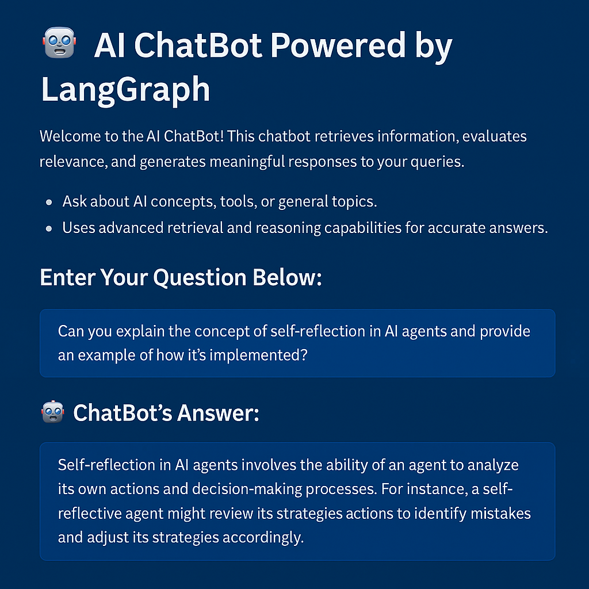
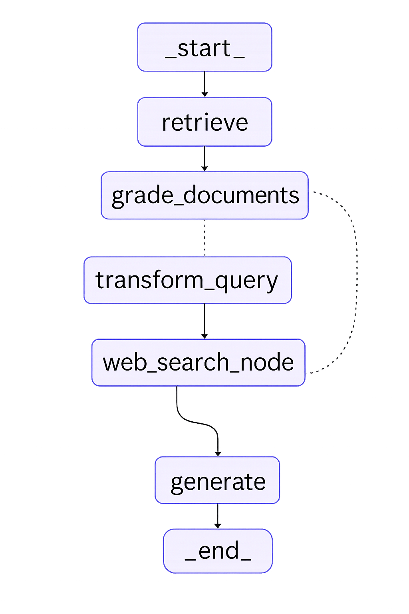

LangGraph RAG ChatBot: Streamlit + Gemini + Web Search

A modern Retrieval-Augmented Generation (RAG) chatbot built using
LangGraph, LangChain, Google Gemini, and Tavily,
featuring a dynamic workflow, document relevance grading, web augmentation, and feedback capabilities — all within an
elegant Streamlit UI.
- 🔄 Powered by LangGraph for conditional node-based orchestration.
- 🧠 Uses Chroma for semantic retrieval and Gemini for LLM reasoning.
- 🌐 Incorporates Tavily for real-time web-enhanced context.
- 🛠️ Features query rewriting, document filtering, and feedback intake.
Architecture

- User Interface: Interactive input and feedback UI via Streamlit.
- Workflow Engine: Manages retrieval, grading, generation with LangGraph.
- Retrieval: Vector search from curated sources using Chroma.
- Web Augmentation: Leverages Tavily for updated, external content.
- Answer Generation: Response generated with Google Gemini.
Challenges Solved
- ⚙️ Simplified complex logic with LangGraph’s state-driven flow.
- 🔍 Ensured relevance through structured LLM-based document grading.
- 🌐 Provided updated insights via web search fallback.
Outcome
This chatbot delivers highly accurate, real-time answers by combining internal semantic knowledge with web data,
demonstrating a scalable, modular RAG solution for production-grade applications.